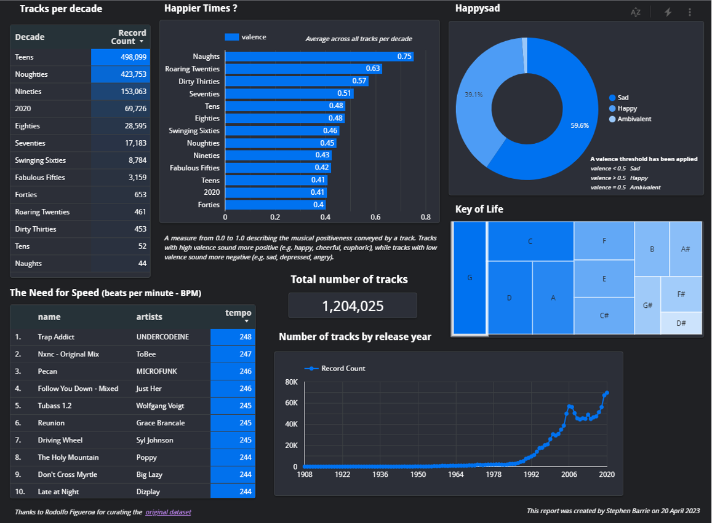

0. Motivation
Outside of Excel spreadsheets, my first introduction to interactive visualization tools was Tableau. Since then I have also become familiar with Looker Studio, which I used for my recent data engineering capstone project.
Based on the job specs that I have seen lately, Power BI seems to be widely used. I decided I’d best familiarise myself with it and try to recreate the dashboard I created in Looker Studio.

1. What is Power BI ?
Power BI is a powerful business intelligence tool developed by Microsoft. It allows users to analyze data and share insights in the form of interactive visualizations, reports, and dashboards. Here’s a brief overview of Power BI’s key components and features:
Data Sources
Power BI can connect to a wide range of data sources, including databases, spreadsheets, online services, and cloud-based platforms. It supports both structured and unstructured data.
Data Transformation
With Power Query, a data preparation tool integrated into Power BI, you can cleanse, transform, and shape data from multiple sources to create a unified view. This includes tasks like filtering, merging, and splitting data.
Data Modeling
Power BI’s data modeling capabilities enable you to define relationships between different tables and create calculated columns and measures using DAX (Data Analysis Expressions) formula language. This helps in organizing and enriching the data for analysis.
Data Visualization
Power BI offers a wide range of visualization options, including charts, graphs, maps, tables, and custom visuals. You can drag and drop data fields onto the canvas to create interactive visualizations that provide insights into your data.
Reports and Dashboards
Power BI allows you to combine multiple visualizations into interactive reports and create personalized dashboards. Reports provide a detailed view of data, while dashboards offer a high-level overview with the ability to drill down into specific areas of interest.
Sharing and Collaboration
You can share your Power BI reports and dashboards with others within your organization or externally. Power BI supports various sharing options, such as publishing to the web, embedding in websites or SharePoint, and secure sharing through Power BI service.
Data Refresh
Power BI enables you to schedule data refreshes to ensure that your reports and dashboards stay up to date with the latest information. It supports automatic refresh from a variety of data sources, including on-premises databases and cloud-based services.
Natural Language Q&A
Power BI offers a natural language query feature that allows users to ask questions in plain English and receive relevant visualizations as answers. This simplifies data exploration and analysis for non-technical users.
Integration with Other Tools
Power BI integrates seamlessly with other Microsoft tools such as Excel, SharePoint, Teams, and Azure. It also provides APIs and connectors to connect with third-party applications and services.
Power BI comes in different editions, including Power BI Desktop (a free Windows application for report authoring), Power BI Pro (a subscription-based service for collaboration and sharing), and Power BI Premium (a dedicated capacity-based offering for enterprise-scale deployments).
Overall, Power BI empowers users to turn raw data into actionable insights, enabling better decision-making and data-driven strategies within organizations.
1.1 Data Sources
The Data Sources feature in Power BI refers to the wide range of data connections and integration capabilities that Power BI offers to retrieve and import data from various sources.
Data Connectivity:
Power BI supports a diverse set of data connectivity options, allowing you to connect to various data sources. This includes popular databases like SQL Server, Oracle, MySQL, and PostgreSQL, as well as cloud-based platforms such as Azure SQL Database, Azure Data Lake Storage, Google BigQuery, Snowflake and Amazon Redshift. It also supports files in formats like Excel, CSV, XML, JSON and parquet.
I was able to import my BiqQuery dataset very easily :
On-Premises Data:
Power BI enables you to connect to on-premises data sources securely. You can establish connections to databases and servers within your organization’s network using technologies like DirectQuery, which allows real-time querying of on-premises data, or Power BI Gateway, a tool that facilitates secure data transfer between on-premises and cloud environments.
Online Services:
Power BI provides connectors to numerous online services, allowing you to directly import data from sources such as SharePoint Online, Dynamics 365, Salesforce, Google Analytics, Azure services (like Azure Blob Storage and Azure Data Factory), and more. These connectors facilitate seamless integration with cloud-based platforms and services.
Web Data Connector:
Power BI includes a Web Data Connector feature that allows you to import data from web-based sources and APIs that expose data in tabular formats. With this feature, you can specify the URL of a web page or an API endpoint, define the data extraction logic, and retrieve the data directly into Power BI for analysis and visualization.
Streaming Data:
Power BI supports real-time data ingestion through streaming data sources. You can connect to streaming platforms like Azure Event Hubs, Apache Kafka, and PubNub to continuously ingest and visualize data as it arrives. This is particularly useful for monitoring live data and generating real-time insights.
Custom Connectors:
Power BI allows the creation of custom connectors to connect to proprietary or unique data sources. You can develop custom connectors using Power BI’s software development kit (SDK), which enables integration with specialized data systems or APIs that are not natively supported by Power BI.
Data Refresh:
Power BI offers options for data refresh to ensure that your reports and dashboards reflect the latest data. You can configure scheduled refreshes for your data sources, defining the frequency and credentials required for accessing and updating the data. Power BI also supports direct query connections, where data is queried in real-time without requiring data import or refresh.
By providing a broad range of data connections and integration capabilities, Power BI empowers users to connect to various data sources, both on-premises and in the cloud, enabling comprehensive data analysis and visualization. It offers flexibility in retrieving data from different platforms, systems, and formats, ensuring that users can leverage their data regardless of its source.
1.2 Data Transformation
I used dbt in my capstone Data Engineering project to transform my data. Power BI also offers a Data Transformation feature, that allow users to transform, cleanse, and shape their data before it is loaded into the Power BI model.
Data Extraction:
Power Query enables users to connect to various data sources and extract data into Power BI for analysis. It supports structured and unstructured data from sources such as databases, files (Excel, CSV, XML, JSON), web pages, and online services. You can import data from single or multiple sources, combining them into a unified view.
Data Cleansing:
Power Query provides a range of data cleansing functions to improve the quality and consistency of your data. You can remove duplicates, filter out irrelevant or erroneous data, handle missing values, correct data types, and perform other data cleansing operations to ensure accurate analysis.
Data Transformation:
Power Query allows you to transform your data by applying various operations. You can perform tasks like splitting columns, merging data from different sources, adding calculated columns based on specific rules or formulas, aggregating data using grouping operations, and pivoting and unpivoting data to restructure it for analysis.
Data Shaping:
Power Query provides a user-friendly interface for shaping your data. You can easily rearrange columns, rename fields, sort and filter data, change data types, and transpose rows and columns. Power Query offers a wide range of transformation options, making it easy to shape your data to match your analysis needs.
Formula Language (M and Power Query Formula Language):
Power Query uses a formula language called M to define data transformations. The M language provides a rich set of functions and operators that allow you to perform complex data transformations. It also supports custom functions and expressions, giving you flexibility in creating advanced data transformations.
Applied Steps:
Power Query records each step of the data transformation process as an “applied step.” These steps are recorded in the Power Query Editor and can be viewed, modified, or deleted. Applied steps provide a transparent and reproducible record of the data transformation operations applied to your data.
Query Dependencies and Refresh:
Power Query manages the dependencies between queries and allows you to define relationships between them. If data in one query changes, Power Query automatically updates the dependent queries. You can also schedule data refreshes to keep your data up to date.
Query Folding:
Power Query aims to optimize performance by utilizing query folding. Query folding is a process where Power Query pushes data transformations to the data source, allowing for efficient data processing. This can significantly improve performance when working with large datasets.
By offering powerful data extraction, cleansing, transformation, and shaping capabilities, Power Query within Power BI enables users to prepare their data for analysis in a flexible and intuitive manner. It provides a robust set of tools and functions to handle a wide range of data transformation scenarios, empowering users to efficiently transform and shape their data to meet their analytical needs.
1.3 Data Modeling
The Data Modeling feature in Power BI refers to the capabilities that allow users to define relationships between data tables, create calculated columns and measures, and organize data for analysis.
Relationships:
Power BI allows you to establish relationships between tables in your data model. Relationships define how tables are connected based on common fields or keys. You can create one-to-one, one-to-many, or many-to-many relationships. By defining relationships, you enable cross-table analysis and the ability to combine data from multiple tables.
Cardinality and Cross Filtering:
Relationships in Power BI have cardinality settings that define how records in one table relate to records in another table. Cardinality options include one-to-one, one-to-many, and many-to-many. Additionally, you can set up cross-filtering behavior to control how filters on one table affect related tables.
Hierarchies:
Power BI allows you to define hierarchies within your data model. Hierarchies are structured relationships between columns that represent different levels of detail. For example, you can define a hierarchy for dates with levels like year, quarter, month, and day. Hierarchies enable drill-down and slice-and-dice analysis.
Calculated Columns:
Power BI allows you to create calculated columns in your data model. Calculated columns are derived from existing columns in a table using formula expressions written in the DAX (Data Analysis Expressions) language. Calculated columns can perform calculations, apply conditional logic, or concatenate strings, among other operations.
Measures:
Measures are calculations that perform aggregations on the data, such as sum, average, count, or other statistical operations. Power BI supports the creation of measures using the DAX language. Measures are typically used in conjunction with visualizations to perform calculations at different levels of granularity and provide meaningful insights.
Data Categories:
Power BI allows you to assign data categories to columns in your data model. Data categories provide additional metadata about the columns and enable Power BI to automatically apply appropriate visualizations and formatting based on the column’s semantic role, such as date, time, currency, or geographic data.
Data View and Relationships View:
Power BI provides two primary views for managing your data model. The Data View allows you to see and manipulate the data tables, columns, and relationships. The Relationships View provides a visual representation of the tables and their relationships, making it easy to create, edit, or delete relationships.
Query Dependencies:
Power BI manages the dependencies between queries and tables. When you define relationships between tables, Power BI takes into account the queries that generate those tables. If a query changes, Power BI automatically updates the dependent tables and their relationships.
By leveraging the Data Modeling feature in Power BI, users can organize their data into a coherent structure, define relationships between tables, and create calculated columns and measures to facilitate advanced analysis. This enables users to explore and gain insights from their data by performing complex calculations, aggregations, and comparisons across multiple tables and columns.
1.4 Data Visualization
The Data Visualization feature in Power BI refers to the capabilities that allow users to create interactive and visually appealing representations of their data. Power BI provides a wide range of visualization options to help users explore, analyze, and communicate insights effectively.
I was able to replicate my Looker Studio dashboard without too much difficulty :
Chart Types:
Power BI offers a variety of chart types, including bar charts, column charts, line charts, area charts, pie charts, scatter plots, tree maps, heat maps, and many more. These chart types cater to different data scenarios and enable users to visualize their data in meaningful ways.
Custom Visuals:
In addition to the built-in chart types, Power BI supports custom visuals created by the community or third-party developers. These custom visuals expand the range of available visualizations and allow users to find or create specific visualizations tailored to their unique data and analysis requirements.
Interactive Visualizations: Power BI visualizations are interactive, allowing users to interact with the data and explore insights. Users can filter data by selecting data points on a chart, drill down into hierarchies or categories, highlight data points for comparison, and apply slicers to dynamically filter visualizations.
Data Labels and Tooltips:
Power BI enables users to display data labels on visualizations to provide additional information, such as values or percentages, directly on the chart. Tooltips can be added to provide more details about specific data points when users hover over them, enhancing the understanding of the data.
Conditional Formatting:
Power BI allows users to apply conditional formatting to visualizations based on data values. Users can define formatting rules that dynamically change colors, font sizes, or other visual attributes based on specified criteria, helping to emphasize important data patterns or outliers.
Map Visualizations:
Power BI includes mapping capabilities that allow users to create geospatial visualizations. Users can plot data points on maps, create thematic maps with color gradients or bubbles to represent data values, and perform geographic analysis using features like drill-down maps and heat maps.
Hierarchy and Drill-Down:
Power BI enables users to represent hierarchical data structures visually. Users can create visualizations with drill-down capabilities, allowing them to navigate through hierarchical levels to explore data in a more granular manner and uncover deeper insights.
Report Layout and Composition:
Power BI provides a flexible canvas for organizing visualizations into reports and dashboards. Users can arrange visuals, add text boxes, images, and shapes, and design visually appealing layouts to present insights effectively. Power BI also supports the creation of report pages to present different views or aspects of the data.
Export and Sharing:
Power BI allows users to export visualizations and reports in various formats, such as PDF, PowerPoint, or Excel, making it easy to share insights with others. Visualizations can also be published and shared with others within the organization or embedded in websites or SharePoint for broader access.
By leveraging the Data Visualization feature in Power BI, users can create engaging, interactive, and informative visual representations of their data. These visualizations help users understand trends, identify patterns, and communicate insights effectively to make informed decisions and drive data-driven strategies.
1.5 Reports and Dashboards
The Reports and Dashboards feature in Power BI allows users to create interactive and visually appealing presentations of their data insights.
Reports:
Reports in Power BI are multi-page documents that contain visualizations, tables, and other elements to present data insights. Users can create reports by arranging visualizations, adding text boxes, images, and shapes, and customizing the layout to suit their needs. Reports provide a comprehensive view of data analysis and allow users to drill down into details, apply filters, and interact with the data.
Visualizations:
Power BI offers a wide range of visualizations to present data in meaningful ways. Users can choose from various chart types, maps, tables, matrices, cards, and more to represent data patterns, trends, and comparisons. Visualizations are interactive, allowing users to explore the data by filtering, highlighting, or drilling down into specific elements.
Interactivity:
Power BI reports are highly interactive. Users can apply filters, slicers, or cross-highlighting to dynamically update visualizations based on selected data points. Interactivity allows users to explore different dimensions of the data, gain deeper insights, and answer ad-hoc questions.
Bookmarking:
Power BI provides bookmarking functionality, allowing users to capture specific views of a report and save them for later reference. Users can create bookmarks that remember the state of filters, slicers, and visualizations, making it easier to revisit and share specific analysis scenarios.
Data Exploration:
Power BI reports enable users to explore data in a self-service manner. Users can drill down into hierarchies, apply filters, sort and group data, and interact with visualizations to uncover insights and discover new patterns. This data exploration capability empowers users to derive actionable insights without relying on predefined analysis paths.
Dashboards:
Dashboards in Power BI are single-page collections of visualizations, reports, and other elements that provide a consolidated view of important metrics and KPIs. Users can pin visualizations from multiple reports onto a dashboard to create a focused and customized view of key insights. Dashboards are interactive and can be shared with others for real-time monitoring and collaboration.
Real-Time Updates:
Power BI supports real-time data updates for reports and dashboards. Users can connect to streaming data sources or configure scheduled data refreshes to ensure that the visuals and insights reflect the most up-to-date information. Real-time updates are particularly useful for monitoring live data and making data-driven decisions in real-time.
Sharing and Collaboration:
Power BI allows users to share reports and dashboards with others within the organization. Users can set permissions to control access and collaborate with colleagues by allowing them to view, interact with, and annotate the shared content. Sharing and collaboration features facilitate teamwork and enable stakeholders to stay informed and aligned.
By leveraging the Reports and Dashboards feature in Power BI, users can create comprehensive reports with interactive visualizations, explore data in a self-service manner, and consolidate key insights into dashboards for real-time monitoring and collaboration. This empowers users to communicate data insights effectively, drive data-driven decisions, and facilitate a culture of data-driven decision-making within the organization.
1.7 Data Refresh
The Data Refresh feature in Power BI enables users to keep their reports, dashboards, and data models up to date with the latest data from the underlying data sources.
Data Source Connectivity:
Power BI supports a wide range of data sources, including databases, cloud services, spreadsheets, web APIs, and more. The Data Refresh feature allows users to establish connections to these data sources and retrieve the data into Power BI for analysis and visualization.
Scheduled Refresh:
Power BI allows users to schedule automated data refreshes based on predefined intervals. Users can set up refresh schedules daily, weekly, or at custom intervals to ensure that the data in their reports and dashboards is regularly updated. Scheduled refreshes can be configured to occur during off-peak hours to minimize disruption.
Direct Query:
In addition to scheduled refresh, Power BI offers a Direct Query mode for certain data sources. With Direct Query, Power BI retrieves data directly from the source in real-time, eliminating the need for data import and refresh. This is particularly useful when working with large or rapidly changing datasets.
Gateway:
The Power BI Gateway is a component that enables secure data transfer between Power BI and on-premises data sources. The gateway allows users to refresh data from on-premises databases or data sources located behind the organization’s firewall. It ensures data security and provides a secure connection between Power BI and the on-premises data sources.
Data Source Credentials:
Power BI allows users to store and manage data source credentials securely. Users can specify authentication methods, such as Windows authentication, username/password, or OAuth, to access the data sources. These credentials can be encrypted and managed centrally to ensure data security and compliance.
Data Refresh Notifications:
Power BI provides notifications and alerts related to data refreshes. Users can receive email notifications to stay informed about the status and success of data refresh operations. Notifications help users identify and address any issues that may arise during the refresh process.
Incremental Refresh:
Power BI offers an Incremental Refresh feature that allows users to refresh only a subset of data that has changed since the last refresh. This can significantly improve the refresh performance, especially when dealing with large datasets where only a portion of the data changes regularly.
On-Demand Refresh:
Power BI provides the flexibility to manually trigger data refreshes on-demand. Users can refresh their reports and dashboards whenever they need the most up-to-date data. On-demand refresh allows for immediate updates and is useful in scenarios where real-time data is critical.
By leveraging the Data Refresh feature in Power BI, users can ensure that their reports, dashboards, and data models are always up to date with the latest information from the underlying data sources. The feature supports scheduled refreshes, direct query, incremental refresh, and on-demand refresh to accommodate different data scenarios and ensure accurate and timely data analysis and visualization.
1.8 Natural Language Q&A
The Natural Language Q&A feature in Power BI allows users to query and explore their data using natural language queries. Instead of writing complex SQL queries or using predefined filters and slicers, users can simply type or speak their questions in plain language and Power BI will generate visualizations and insights based on the queried data.
Initial suggestions are provided :
however as with Chat GT, a fair amount of prompt engineering will be required before the full benefits of this feature can be harnessed.
Over time the dictionary will become more refined and tailored to the particular dataset.
Conversational Querying:
Power BI’s Natural Language Q&A feature enables users to have a conversation with their data. Users can type or speak questions using natural language, just like they would ask a question to a person. For example, users can ask questions like “Show me sales by region” or “What are the top-selling products last month?”
Auto-Visualization:
Power BI automatically generates visualizations and reports based on the queried data and the intent of the question. The system analyzes the question, identifies relevant data sources, and selects the appropriate visualizations to represent the insights. Users can quickly get visual answers to their questions without the need to manually create charts or reports.
Smart Data Exploration:
The Natural Language Q&A feature allows users to explore their data interactively. Users can refine their questions, add follow-up questions, apply filters, and drill down into specific details to get deeper insights. Power BI understands the context of the conversation and dynamically updates the visualizations based on the user’s interactions.
Semantic Understanding:
Power BI utilizes advanced natural language processing (NLP) techniques to understand the meaning and intent behind the user’s queries. It can interpret variations in question phrasing, handle synonyms, and identify relationships between different data elements. The system uses semantic understanding to generate accurate results and relevant visualizations.
Data Validation and Corrections:
Power BI provides instant feedback during the query process. If the system detects any data inconsistencies or errors, it offers suggestions or prompts the user for clarifications. This helps users refine their queries and ensure the accuracy of the generated insights.
Natural Language Generation:
In addition to understanding natural language queries, Power BI can also generate textual descriptions and narratives based on the queried data. It can provide summaries, explanations, or contextual information about the insights, making it easier for users to understand and communicate the findings to others.
Integration with Other Features:
The Natural Language Q&A feature seamlessly integrates with other Power BI features. Users can combine natural language queries with data exploration, data modeling, and data visualization capabilities. They can create reports and dashboards based on the generated insights, share them with others, and collaborate on data-driven decision-making.
The Natural Language Q&A feature in Power BI simplifies the process of querying and exploring data by allowing users to ask questions in natural language. It eliminates the need for technical expertise or writing complex queries, making data analysis and exploration more accessible to a wider audience. With this feature, users can quickly gain insights, make data-driven decisions, and uncover valuable information hidden within their data.
1.9 Integration with Other Tools
Power BI offers integration with various other tools and platforms to enhance its functionality and provide users with a seamless end-to-end data analytics and visualization experience.
Microsoft Office Integration:
Power BI integrates closely with Microsoft Office applications such as Excel, PowerPoint, and SharePoint. Users can embed Power BI reports and dashboards directly into Excel workbooks or PowerPoint presentations, enabling them to leverage the rich visualizations and interactive capabilities of Power BI within familiar Office applications. Power BI content can also be published and shared through SharePoint for easy access and collaboration.
Azure Integration:
Power BI is tightly integrated with Microsoft Azure, Microsoft’s cloud computing platform. Users can leverage Azure services such as Azure Data Factory, Azure SQL Database, Azure Machine Learning, and more as data sources for Power BI. This integration enables users to leverage advanced analytics capabilities and cloud-based data storage and processing in conjunction with Power BI’s visualization and reporting features.
SQL Server Integration:
Power BI seamlessly integrates with Microsoft SQL Server, allowing users to connect directly to SQL Server databases and analyze data in real-time. Users can create reports and visualizations based on SQL Server data, leverage SQL Server Analysis Services (SSAS) for advanced modeling and analytics, and use SQL Server Reporting Services (SSRS) to publish and share reports.
Third-Party Integration:
Power BI supports integration with various third-party tools, services, and data sources. It provides connectors and APIs to connect to popular applications and platforms such as Salesforce, Google Analytics, Azure Data Lake, SharePoint Online, and many more. These integrations enable users to pull data from multiple sources, combine them, and visualize insights within Power BI.
Custom Visualizations:
Power BI allows users to extend its visualization capabilities by importing custom visualizations developed by the community or by creating their own visualizations using Power BI’s developer tools and APIs. This integration enables users to incorporate specialized or industry-specific visualizations into their reports and dashboards, enhancing the visualization options and addressing specific business requirements.
Power Platform Integration:
Power BI is part of the Microsoft Power Platform, which also includes Power Apps and Power Automate (formerly Microsoft Flow). Users can leverage the integration between these tools to create end-to-end data-driven solutions. For example, they can use Power Apps to build custom data entry forms that interact with Power BI data, or use Power Automate to automate workflows and trigger actions based on Power BI data.
Application Programming Interface (API):
Power BI provides a comprehensive REST API that allows developers to programmatically interact with Power BI functionality. Developers can use the API to embed Power BI reports and dashboards into custom applications, automate report generation and distribution, manage Power BI resources, and perform data operations such as data refreshes or dataset creation.
By integrating with other tools and platforms, Power BI extends its capabilities and provides users with a connected and comprehensive data analytics ecosystem. These integrations allow users to leverage existing investments in Microsoft technologies, connect to a wide range of data sources, extend visualization options, and build end-to-end data-driven solutions that seamlessly integrate with other business applications and processes.
2.0 Comparison between Power BI and Looker
User Interface and Ease of Use: - Power BI provides a user-friendly interface with intuitive drag-and-drop features, making it easy for users of all skill levels to create visualizations and reports.
- Looker, on the other hand, has a more advanced interface that may require technical expertise and training to fully utilize its capabilities.
Data Connectivity: - Power BI offers a wide range of data connectors, allowing users to connect to various data sources, including databases, cloud services, and web APIs.
- Looker also provides multiple data connectors, but it primarily focuses on SQL-based databases and data warehouses.
Data Transformation and Modeling: - Power BI has robust data transformation capabilities, allowing users to clean, transform, and shape data within the tool itself. It also offers a flexible data modeling feature with relationships between tables.
- Looker relies on its underlying data model and typically requires data transformations and modeling to be performed in the connected data source.
Natural Language Processing (NLP): - Power BI includes a Natural Language Q&A feature that allows users to query data using plain language.
- Looker does not have a built-in NLP feature but provides a LookML-based query language that allows users to write customized queries.
Customization and Extensions: - Power BI offers a wide range of visualization options, and users can extend its capabilities by importing custom visualizations or creating their own with Power BI developer tools.
- Looker, on the other hand, provides a strong customization framework, allowing users to create custom visualizations and embed Looker components within other applications.
Sharing and Collaboration: - Power BI has robust sharing and collaboration features, allowing users to share reports, dashboards, and collaborate in real-time with colleagues.
- Looker also provides sharing and collaboration capabilities, but it primarily focuses on sharing through Looker’s web-based interface rather than embedding within external applications.
Deployment Options: - Power BI offers both cloud-based (Power BI Service) and on-premises (Power BI Report Server) deployment options.
- Looker is primarily a cloud-based platform, although it also supports on-premises deployment through the Looker on-premises offering.
Pricing and Licensing: - Power BI offers various pricing plans, including free and paid options, with different feature sets and data capacity limits.
- Looker’s pricing structure is typically based on a subscription model and can vary depending on factors such as user count, data size, and deployment options.
Key Takeaway
Looker is recognized for its advanced data modeling and exploration capabilities, customization options, and SQL-centric approach.
Power BI, on the other hand, is known for its user-friendly interface, extensive data connectivity options, strong data transformation capabilities, and tight integration with the Microsoft ecosystem. The Natural Language QnA feature is a particularly interesting development.
The choice between the two tools depends on specific business requirements, technical expertise, and preferences in terms of functionality, usability, and integration needs.